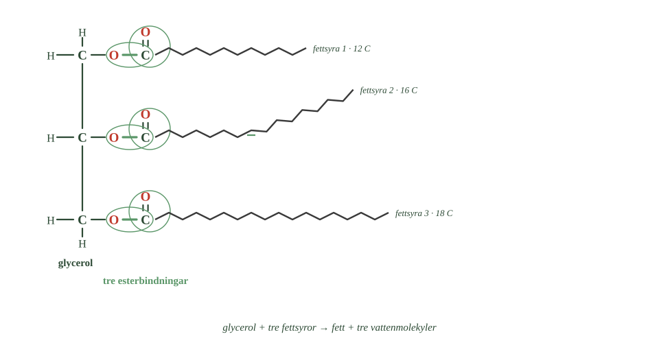
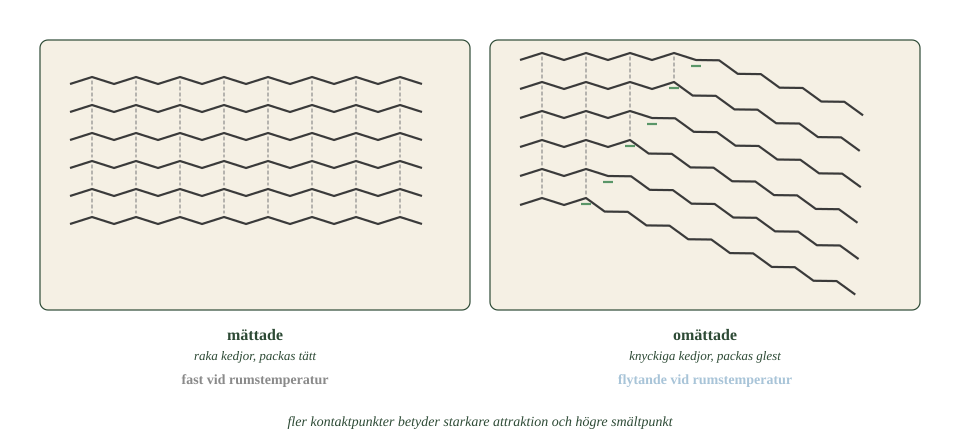

- Hur många esterbindningar finns i en fettmolekyl, och varför just så många?
- Hur många vattenmolekyler lämnar när ett fett bildas?
- Hur många kolatomer har en vanlig fettsyra?
- Är de tre fettsyrorna i ett fett likadana?
- Vilken del av fettmolekylen är alltid densamma?
Fetter kan se väldigt olika ut.
Smör är fast. Olivolja är flytande. Ändå är de byggda efter exakt samma grundmodell: glycerol och tre fettsyror, sammankopplade med esterbindningar.
Så varför är det ena fast och det andra flytande?
Svaret finns i fettsyrorna — i hur långa de är och om de har dubbelbindningar.
Repetition: så bildas en ester
I förra delkapitlet såg du hur en alkohol och en organisk syra kan reagera.
Syran lämnar en OH-grupp. Alkoholen lämnar en väteatom. Tillsammans blir det vatten, och kvar blir en esterbindning.
Ett fett är tre estrar på en gång
Ett fett bildas på precis samma sätt. Men tre gånger.
Alkoholen är glycerol, och den har tre hydroxylgrupper.
- Räkna de gröna ringarna vid glycerolen.
- Är de tre fettsyrorna lika långa?
- En av dem ser annorlunda ut. Vilken, och hur?

Varje hydroxylgrupp kan reagera med karboxylgruppen hos en fettsyra.
Tre grupper, tre fettsyror, tre esterbindningar. Och sammanlagt tre vattenmolekyler som lämnar.
En sådan molekyl kallas också triglycerid. Tri- betyder tre, precis som i propantriol.
Fettsyrorna är långa kolkedjor
En fettsyra är en lång kolvätekedja med en karboxylgrupp i ena änden.
Kedjorna kan ha ungefär fyra till tjugofyra kolatomer. I vanliga fetter är tolv till tjugofyra det vanligaste.
De tre fettsyrorna i en fettmolekyl behöver inte vara likadana. En och samma triglycerid kan ha kedjor av olika längd och med olika många dubbelbindningar.
Det är därför det finns så oerhört många olika fetter, trots att alla följer samma modell.
Egenskaperna kommer från fettsyrorna
Glyceroldelen ser likadan ut i alla fetter. Alltid tre kolatomer, alltid tre bindningar ut.
Allt som varierar sitter i fettsyrorna.
En fettsyra kan vara kort eller lång. Kedjan kan ha bara enkelbindningar, eller en eller flera dubbelbindningar.
Det påverkar molekylens form. Och formen avgör hur nära andra fettmolekyler den kan komma.
Två fetter kan alltså ha exakt samma glyceroldel och ändå vara helt olika ämnen.
- Hur många esterbindningar finns i en fettmolekyl, och varför just så många?
- Hur många vattenmolekyler lämnar när ett fett bildas?
- Hur många kolatomer har en vanlig fettsyra?
- Är de tre fettsyrorna i ett fett likadana?
- Vilken del av fettmolekylen är alltid densamma?
Fetter kan se väldigt olika ut. Smör är fast, olivolja flytande. Ändå är de byggda enligt samma princip: glycerol och tre fettsyror, sammankopplade med esterbindningar.
För att förstå skillnaden måste vi titta på fettsyrorna. Det är deras längd och deras dubbelbindningar som avgör hur nära molekylerna kan komma varandra — och därmed om fettet är fast eller flytande.
Fett innehåller tre esterbindningar
I förra delkapitlet såg du hur en alkohol och en organisk syra bildar en ester, samtidigt som en vattenmolekyl lämnar.
Ett fett bildas på exakt samma sätt. Alkoholen är glycerol, som har tre hydroxylgrupper. Varje grupp kan reagera med karboxylgruppen hos en fettsyra.
Resultatet blir en molekyl med tre esterbindningar, och sammanlagt tre vattenmolekyler lämnar.
En sådan fettmolekyl kallas också triglycerid.
Fettsyrorna är långa kolkedjor
En fettsyra är en lång kolvätekedja med en karboxylgrupp i ena änden.
Kedjorna kan innehålla ungefär fyra till tjugofyra kolatomer. I vanliga fetter är tolv till tjugofyra det vanligaste.
De tre fettsyrorna i en fettmolekyl behöver inte vara likadana. En triglycerid kan innehålla kedjor med olika längd och olika antal dubbelbindningar.
Det är därför det finns så många olika fetter trots att alla följer samma grundmodell.
Egenskaperna kommer från fettsyrorna
Glyceroldelen är densamma i alla triglycerider. Allt som varierar sitter i fettsyrorna.
En fettsyra kan vara kortare eller längre, och kedjan kan ha bara enkelbindningar eller en eller flera dubbelbindningar.
Det påverkar molekylens form, och formen avgör hur nära andra fettmolekyler den kommer.
Två fetter kan alltså ha samma glyceroldel och ändå vara helt olika ämnen.
En fettmolekyl har en vattenvänlig ände och en lång vattenskyende svans
Standardtexten beskriver fettet som glycerol plus tre fettsyror. Det är korrekt, men det säger inget om hur molekylen beter sig i vatten — och kroppen är full av vatten.
Ta en ensam fettsyra först. Den har en karboxylgrupp i ena änden och en lång kolkedja i den andra.
Karboxylgruppen är vattenvänlig, av samma skäl som hydroxylgruppen i alkoholerna.
Kolkedjan är vattenskyende, precis som ett kolväte.
Det är alltså samma dragkamp du mötte i delkapitel 4 — men här är den extrem. Hos etanol var kolvätedelen två kolatomer. Hos en fettsyra kan den vara tjugo.
Kolkedjan vinner med bred marginal, och fettsyror löser sig därför inte i vatten.
Men det hindrar dem inte från att ordna sig. Lägger man fettsyror i vatten vänder de alla sina karboxylgrupper mot vattnet och sina kedjor bort från det. De bildar små klot med kedjorna inåt och grupperna utåt.
Det är den principen som gör tvål möjlig. Tvål är salter av fettsyror, och en tvållösning är full av sådana klot — som kan fånga in fett i mitten och transportera bort det i vattnet.
I en triglycerid finns däremot ingen fri karboxylgrupp kvar. Alla tre är upptagna i esterbindningar. Molekylen är därför helt vattenskyende, och det är därför olja och vatten skiljer sig i två skikt.
Om modellen. Standardnivån beskriver fettet som en byggnad — glycerol plus tre delar. Det säger vad det består av men inte hur det uppför sig. Att en molekyl har en vattenvänlig och en vattenskyende del är ofta viktigare än vilka atomer den innehåller.
- Vad kännetecknar en mättad fettsyra?
- Varför får en omättad fettsyra en knyck?
- Vad händer med packningen när kedjorna är knyckiga?
- Vad är skillnaden mellan enkelomättat och fleromättat?
- Varför är vegetabiliskt och animaliskt ingen kemisk indelning?
Mättade fettsyror är raka
En mättad fettsyra har bara enkelbindningar mellan kolatomerna.
Kedjan kan då ligga i en jämn sicksack — i praktiken rak.
Raka kedjor packas tätt
Tänk dig många raka kedjor bredvid varandra. De kan ligga tätt, som spagetti i en oöppnad förpackning.
När de ligger nära uppstår svaga attraktionskrafter mellan dem. De kallas van der Waals-krafter.
Varje enskild kraft är svag. Men en lång kedja har många kontaktpunkter längs hela sin längd, och summan blir stor.
Därför krävs mycket energi för att skilja molekylerna åt.
Fetter med mycket mättade fettsyror har alltså hög smältpunkt. De är fasta vid rumstemperatur.
Omättade fettsyror har en knyck
En omättad fettsyra har minst en dubbelbindning.
Och nu kommer det avgörande: en dubbelbindning går inte att vrida på. Det såg du i delkapitel 2.
I naturens omättade fettsyror fortsätter kedjan åt olika håll på var sida om dubbelbindningen. Kedjan får en knyck som inte går att räta ut.
Knyckiga kedjor packas glest
Försök lägga knyckiga kedjor tätt bredvid varandra. Det går inte — knyckarna kommer i vägen.
- Räkna de streckade linjerna i varje panel.
- Var sitter knyckarna, och vad har de gemensamt?
- Vilken panel skulle vara svårast att pressa ihop?

Molekylerna får mindre kontaktyta mot varandra. Attraktionen blir svagare. Det krävs mindre energi för att de ska glida förbi varandra.
Därför är fetter med mycket omättade fettsyror flytande vid rumstemperatur.
Enkelomättade och fleromättade
En fettsyra med en dubbelbindning kallas enkelomättad.
En med två eller flera kallas fleromättad.
Varje dubbelbindning ger en knyck till. Fler knyckar betyder sämre packning och lägre smältpunkt.
Olivolja har mycket enkelomättade fettsyror. Rapsolja har både enkelomättade och fleromättade. Fiskolja har mycket fleromättade.
Men antalet dubbelbindningar är inte allt. Kedjornas längd spelar också roll.
Vegetabiliskt och animaliskt är ingen kemisk indelning
Fetter delas ibland in i vegetabiliska och animaliska.
Den indelningen säger var fettet kommer ifrån — från växt eller djur. Den säger ingenting om hur molekylerna ser ut.
Mönstret stämmer ofta. Växtoljor har mer omättade fettsyror och är flytande. Djurfetter har mer mättade och är fasta.
Men det finns tydliga undantag.
Kokosfett kommer från en växt men är fast, eftersom det har mycket mättade fettsyror.
Fiskolja kommer från ett djur men är flytande, eftersom den har mycket fleromättade.
För en kemist är frågan alltså inte varifrån fettet kommer. Frågan är hur fettsyrorna ser ut.
- Vad kännetecknar en mättad fettsyra?
- Varför får en omättad fettsyra en knyck?
- Vad händer med packningen när kedjorna är knyckiga?
- Vad är skillnaden mellan enkelomättat och fleromättat?
- Varför är vegetabiliskt och animaliskt ingen kemisk indelning?
Mättade fettsyror kan packas tätt
En mättad fettsyra har bara enkelbindningar mellan kolatomerna. Kedjan kan därför ligga rak.
Raka kedjor kan packas tätt. Molekylerna kommer nära varandra längs hela längden, och mellan dem uppstår van der Waals-krafter.
Varje enskild kraft är svag. Men en lång kedja har många kontaktpunkter, och summan blir stor.
Det krävs därför mycket energi för att skilja molekylerna åt. Fetter med mycket mättade fettsyror har hög smältpunkt och är ofta fasta vid rumstemperatur.
Omättade fettsyror får en knyck
En omättad fettsyra har minst en dubbelbindning.
En dubbelbindning skiljer sig från en enkelbindning på ett avgörande sätt: den går inte att vrida på.
I naturens omättade fettsyror fortsätter kolkedjan åt olika håll på var sida om dubbelbindningen. Kedjan får en tydlig knyck som inte går att räta ut.
Knyckiga kedjor kan inte packas tätt. Kontaktytan blir mindre, attraktionen svagare, och det krävs mindre energi för att molekylerna ska glida förbi varandra.
Därför är fetter med mycket omättade fettsyror flytande vid rumstemperatur.
Enkelomättade och fleromättade
En fettsyra med en dubbelbindning kallas enkelomättad. Med två eller flera kallas den fleromättad.
Varje dubbelbindning ger ytterligare en knyck. Fler knyckar betyder sämre packning och lägre smältpunkt.
Olivolja innehåller mycket enkelomättade fettsyror. Rapsolja innehåller både enkelomättade och fleromättade. Fiskolja innehåller mycket fleromättade.
Men antalet dubbelbindningar är inte allt — kedjornas längd spelar också roll.
Vegetabiliskt och animaliskt är ingen kemisk indelning
Fetter delas ibland in i vegetabiliska och animaliska. Den indelningen säger var fettet kommer ifrån, inte hur molekylerna ser ut.
Mönstret stämmer ofta: växtoljor har mer omättade fettsyror och är flytande, djurfetter har mer mättade och är fasta.
Men det finns tydliga undantag. Kokosfett är vegetabiliskt och fast. Fiskolja är animalisk och flytande.
För kemisten är därför frågan inte varifrån fettet kommer, utan hur fettsyrorna ser ut.
Knycken har ett namn, och den går att ta bort
Standardtexten säger att omättade fettsyror har en knyck som inte går att räta ut. Det stämmer — men bara för den sorts dubbelbindning som naturen använder.
En dubbelbindning kan nämligen sitta på två sätt.
Sitter kolkedjan på samma sida om dubbelbindningen kallas den cis. Då blir det en knyck.
Sitter den på var sin sida kallas den trans. Då fortsätter kedjan nästan rakt, trots dubbelbindningen.
Nästan alla omättade fettsyror i naturen är cis. Det finns ingen kemisk nödvändighet i det — det är enzymerna som bygger dem som gör det så.
Skillnaden får stora följder. En transfettsyra har en dubbelbindning men beter sig ändå nästan som en mättad: den packar sig tätt och ger ett fast fett.
Det har utnyttjats industriellt. Genom att tillsätta väte till omättade fettsyror kan man göra flytande olja fast — en process som kallas härdning. Görs den ofullständigt bildas transfetter som biprodukt, och under stora delar av 1900-talet fanns de i margarin och i mycket industribakat.
De har senare visat sig påverka hälsan negativt, och i dag är halterna reglerade i många länder.
Om modellen. "Dubbelbindningen ger en knyck" är sant om cis-formen, som är den enda du möter i mat från naturen. Men knycken kommer inte av dubbelbindningen i sig — den kommer av vilken sida kedjan fortsätter på. Samma bindning, två geometrier, två helt olika material.
- Vad händer med vattnet när ett fett bildas?
- Vad händer med vattnet när ett fett bryts ner?
- Vad kallas reaktionen där vatten används för att bryta en bindning?
- Vilka enzymer bryter ner fett?
- Varför måste fettmolekylen delas innan kroppen kan ta upp den?
Åt ena hållet bildas vatten
När ett fett bildas kopplas glycerol och fettsyror samman, och vatten lämnar.
Tre esterbindningar betyder tre vattenmolekyler.
Åt andra hållet förbrukas vatten
Reaktionen kan gå åt motsatt håll.
Då används vatten för att bryta esterbindningarna. Reaktionen heter hydrolys, och du mötte den i avsnitt 1.
Bryts alla tre bindningarna behövs tre vattenmolekyler. Kvar blir glycerolen och tre lösa fettsyror.
Samma system, två riktningar: bildas bindningar avges vatten, bryts de används vatten.
Utan hjälp går det för långsamt
Esterbindningar kan reagera med vatten även utan hjälp. Problemet är hastigheten — det skulle ta alldeles för lång tid för att vara till nytta i en kropp.
Därför används enzymer.
De enzymer som bryter ner fett kallas lipaser. Ett lipas binder till fettmolekylen och gör att hydrolysen sker på bråkdelen av tiden.
Därför måste fett smältas
En fettmolekyl är för stor för att passera tarmväggen.
Lipaserna delar därför upp den i mindre delar. De kan tas upp av cellerna i tarmväggen.
Och där inne kopplas delarna ihop igen till nya fettmolekyler.
Samma reaktion, båda hållen. Bindningar byggs, bryts, och byggs igen.
Det du lärt dig om organiska reaktioner är alltså ingenting som bara händer i laboratorier. Det pågår i din tarm just nu.
- Vad händer med vattnet när ett fett bildas?
- Vad händer med vattnet när ett fett bryts ner?
- Vad kallas reaktionen där vatten används för att bryta en bindning?
- Vilka enzymer bryter ner fett?
- Varför måste fettmolekylen delas innan kroppen kan ta upp den?
Esterbindningarna bryts med vatten
När ett fett bildas kopplas glycerol och fettsyror samman och vatten lämnar.
Reaktionen kan gå åt motsatt håll. Då används vatten för att bryta esterbindningarna, och reaktionen kallas hydrolys.
En triglycerid har tre esterbindningar. Bryts alla tre behövs tre vattenmolekyler, och kvar blir glycerol och tre fria fettsyror.
Det är alltså samma kemiska system åt två håll: bildas det esterbindningar avges vatten, bryts de används vatten.
Enzymer får reaktionen att gå snabbt
Esterbindningar kan reagera med vatten även utan hjälp, men det går alldeles för långsamt för att vara användbart i en kropp.
Därför används enzymer. De som bryter ner fett kallas lipaser.
Ett lipas binder till fettmolekylen och gör att hydrolysen kan ske på bråkdelen av tiden.
Stora molekyler delas i mindre delar
En triglycerid är för stor för att passera tarmväggen.
Lipaserna delar därför upp den i mindre delar, som kan tas upp av cellerna i tarmväggen. Där kan delarna sedan kopplas ihop igen till nya fettmolekyler.
Samma reaktion, båda hållen: esterbindningar byggs genom kondensation och bryts genom hydrolys.
Det du lärt dig om organiska reaktioner är alltså inte något som bara sker i laboratorier. Det sker i din tarm just nu.
Dubbelbindningarna är också fettets svaga punkt
Standardtexten beskriver hur esterbindningarna bryts vid matsmältningen. Men fett kan förstöras på ett annat sätt också, och det sker utanför kroppen.
Fett härsknar. Och det sker på två skilda vägar.
Den första är hydrolys. Vatten bryter esterbindningarna och frigör fettsyror. Korta fettsyror luktar — smörsyra med sina fyra kolatomer är precis den som ger härsket smör dess lukt. Det är samma molekyl du mötte i delkapitel 5.
Den andra är oxidation, och den drabbar bara omättade fetter.
Kolatomen bredvid en dubbelbindning är ovanligt lättangripen. Syre från luften kan reagera där, och reaktionen startar en kedjereaktion som bryter sönder fettsyran i mindre bitar — bland annat aldehyder, som luktar starkt och obehagligt.
Det förklarar ett mönster som annars ser paradoxalt ut. Ju mer omättat ett fett är, desto snabbare härsknar det. Fiskolja håller sämst av alla vanliga fetter, eftersom den har flest dubbelbindningar.
Det förklarar också varför oljor säljs i mörka flaskor och varför det står att de ska förvaras svalt. Ljus och värme startar kedjereaktionen snabbare.
Om modellen. Standardnivån behandlar esterbindningen som fettets svaga punkt, eftersom det är den kroppen bryter. Utanför kroppen är det tvärtom: esterbindningen håller bra, och det är dubbelbindningarna som ger vika. Vilken bindning som är svagast beror på vad som angriper den.
Laddar övningskort…
Laddar frågor ...